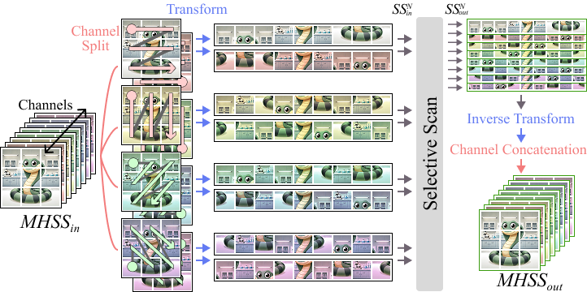
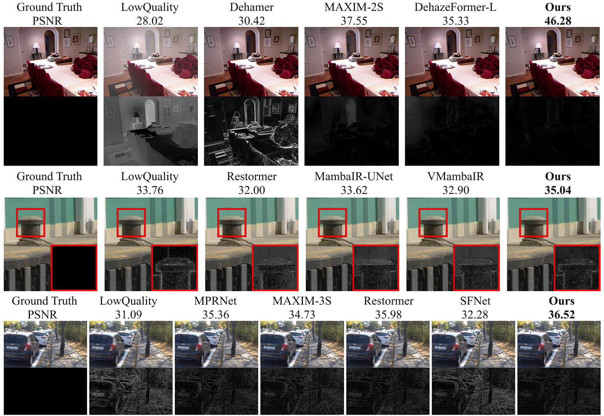
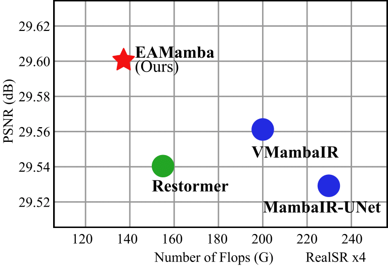
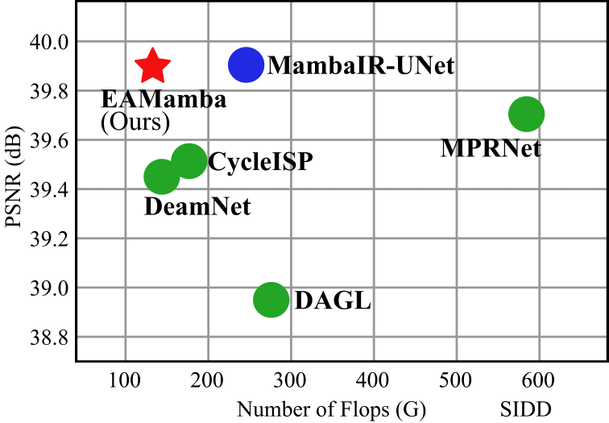
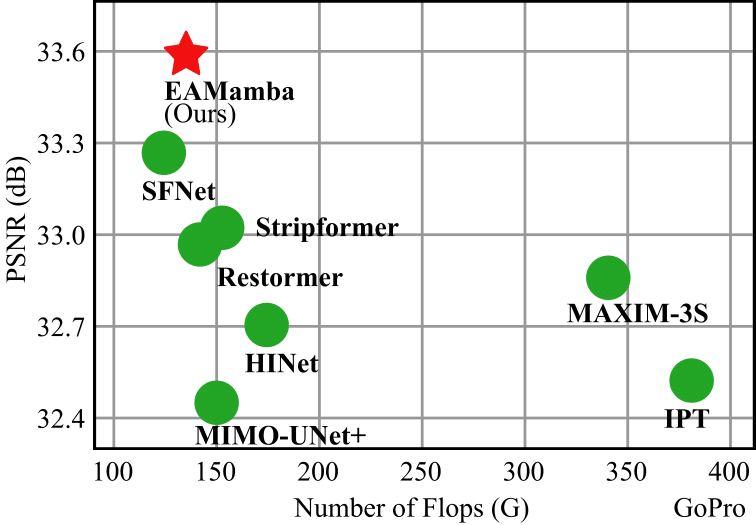
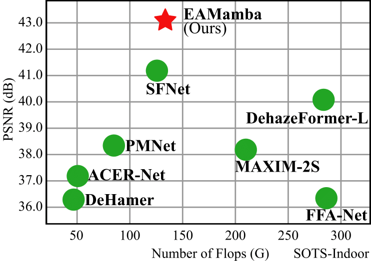

Main architecture

Multi-Head Selective Scan

Result

More results can be found in our paper.




Image restoration is a key task in low-level computer vision that aims to reconstruct high-quality images from degraded inputs. The emergence of Vision Mamba, which draws inspiration from the advanced state space model Mamba, marks a significant advancement in this field. Vision Mamba demonstrates excellence in modeling long-range dependencies with linear complexity, a crucial advantage for image restoration tasks. Despite its strengths, Vision Mamba encounters challenges in low-level vision tasks, including computational complexity that scales with the number of scanning sequences and local pixel forgetting. To address these limitations, this study introduces Efficient All-Around Mamba (EAMamba), an enhanced framework that incorporates a Multi-Head Selective Scan Module (MHSSM) with an all-around scanning mechanism. MHSSM efficiently aggregates multiple scanning sequences, which avoids increases in computational complexity and parameter count. The all-around scanning strategy implements multiple patterns to capture holistic information and resolves the local pixel forgetting issue. Our experimental evaluations validate these innovations across several restoration tasks, including super resolution, denoising, deblurring, and dehazing. The results validate that EAMamba achieves a significant 31-89% reduction in FLOPs while maintaining favorable performance compared to existing low-level Vision Mamba methods.


More results can be found in our paper.
@article{lin2025eamamba,
author = {Yu-Cheng Lin and Yu-Syuan Xu and Hao-Wei Chen and Hsien-Kai Kuo and Chun-Yi Lee},
title = {EAMamba: Efficient All-Around Vision State Space Model for Image Restoration},
journal = {ICCV},
year = {2025},
}